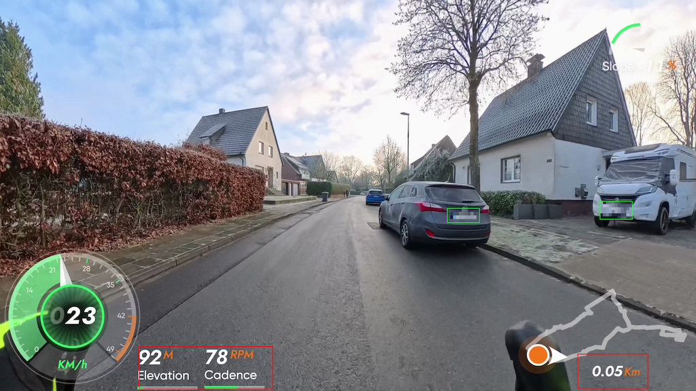
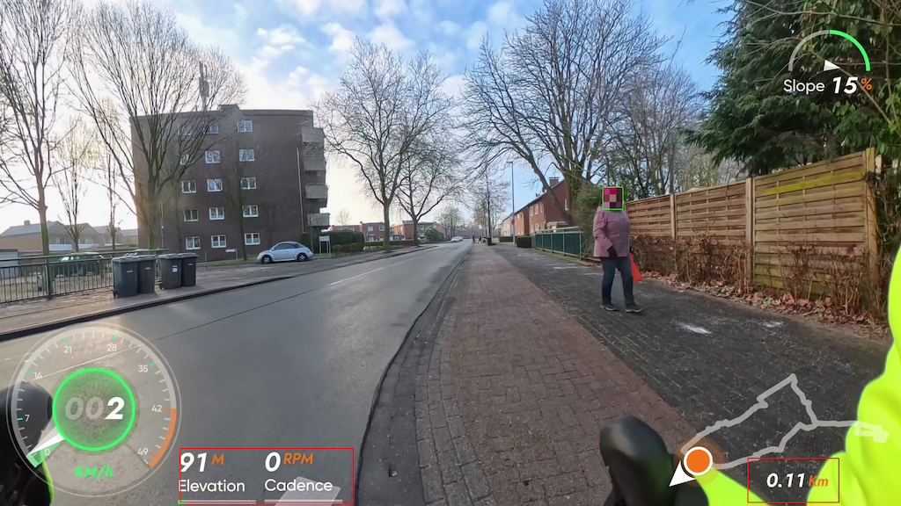

DSGVO-Pixeler erkennt sensible Bildbereiche, verpixelt sie automatisch und sorgt für konsistente Ausgaben. Ideal für YouTube, Screenshots, Datensätze oder Support-Dokumente.
Für Bildmaterial gelten klare Datenschutzanforderungen. DSGVO-Pixeler beschleunigt deinen Prozess und hilft dabei, sensible Informationen zuverlässig zu anonymisieren – mit einem modernen Workflow, der sich leicht in bestehende Pipelines integrieren lässt.
Pro-Tipp: Nutze es für Reports, interne Demos oder Trainingsdaten.
Hilft beim datenschutzkonformen Arbeiten durch automatische Erkennung und Verpixelung.
Ideal als CLI-Tool oder als Baustein in einer automatisierten Pipeline.
Saubere und nachvollziehbare Outputs für Freigaben und Reviews.


Kennzeichen und Gesichter sind standardmäßig aktiv und lassen sich gezielt ein- oder ausschalten.
Echte Pixelmosaike mit eigener Stärke für Kennzeichen und Gesichter.
Bessere Erkennung kleiner Details durch Tiling, optional mit Tracking gegen Flackern.
Definiere Bereiche, die niemals verpixelt werden sollen – ideal für UI-Elemente.
Automatische JPEG-Snapshots in definierbaren Intervallen.
Speichere Einstellungen als Preset und lade sie für neue Projekte.
--pad--tiling)--no_track)work_w und imgszauto oder fix)Definiere die Quelle oder lade ein Bild-Set, das geprüft werden soll.
DSGVO-Pixeler erkennt sensible Bereiche und verpixelt sie automatisch.
Erhalte sofort nutzbare Ergebnisse für Reports, Support oder Training.
Python 3.10+, ffmpeg und ein Kennzeichenmodell in models/plates/ bereitstellen.
Virtuelle Umgebung anlegen, aktivieren und die requirements.txt installieren.
Einfach ausführen: python dsgvo-pixeler.py --input input.mp4 --output output.mp4 --weights models/plates/best.pt
Das Output-Video landet im Zielordner, optional mit Debug-Overlays und Snapshots.
.pt in models/plates/models/faces/python3 -m venv .venvsource .venv/bin/activatepip install -U pippip install -r requirements.txtNein, sie laufen nacheinander – das ist stabiler und oft schneller.
Über Kacheln sind Objekt-IDs nicht konsistent, daher wird Tracking automatisch abgeschaltet.
Standard ist --tiling 2 (2x2 Raster) für bessere Erkennung kleiner Kennzeichen.
Alle .pt-Dateien in models/plates/ und models/faces/ werden automatisch genutzt.
Nutze --no_audio, dann wird das Output-Video ohne Audio erzeugt.
Stelle --blocks_plates und --blocks_faces ein (größerer Wert = grobere Pixel).
Beim Tiling läuft YOLO auf jeder Kachel – das erhöht die Rechenzeit, verbessert aber kleine Objekte.
python dsgvo-pixeler.py --input source.mp4python dsgvo-pixeler.py --input /videos/source \\
--output /videos/pixelt
python dsgvo-pixeler.py --input "/videos/source/*.mp4" \\
--output /videos/pixeltpython dsgvo-pixeler.py \\
--input input.mp4 \\
--output output_h264.mp4 \\
--weights /path/to/plate_model.pt \\
--codec h264 \\
--bitrate 50Mpython dsgvo-pixeler.py --input input.mp4 \\
--weights models/plates/best.pt --no_facespython dsgvo-pixeler.py --input input.mp4 \\
--faces_weights models/faces/face1.pt --no_platespython dsgvo-pixeler.py --input source.mp4 \\
--tiling 2 --debug_pixel --debug_no_pixelpython dsgvo-pixeler.py --input input.mp4 \\
--snapshot_every 5 --snapshot_size 1920x1080python dsgvo-pixeler.py --input source.mp4 --save_preset json\npython dsgvo-pixeler.py --input another.mp4 --load_preset source_presetTeste den DSGVO-Pixeler, integriere ihn in deinen Workflow und bleib DSGVO-konform.